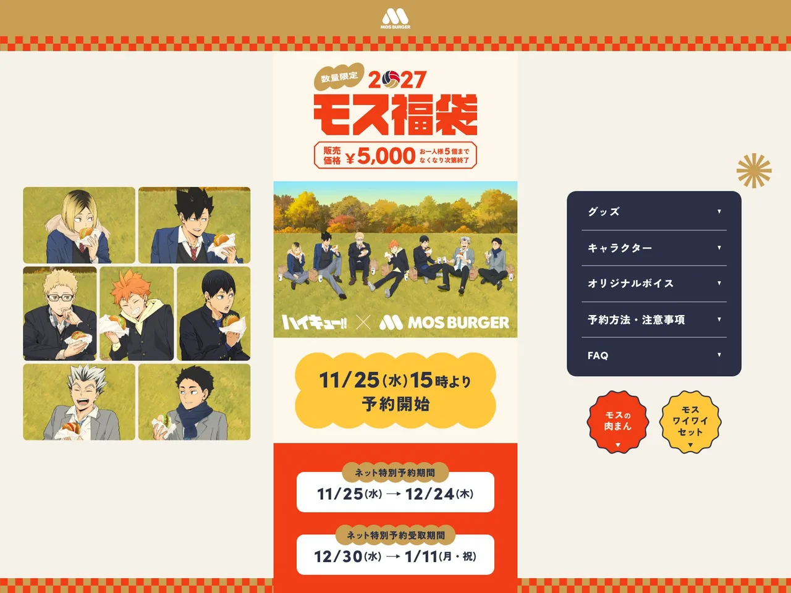
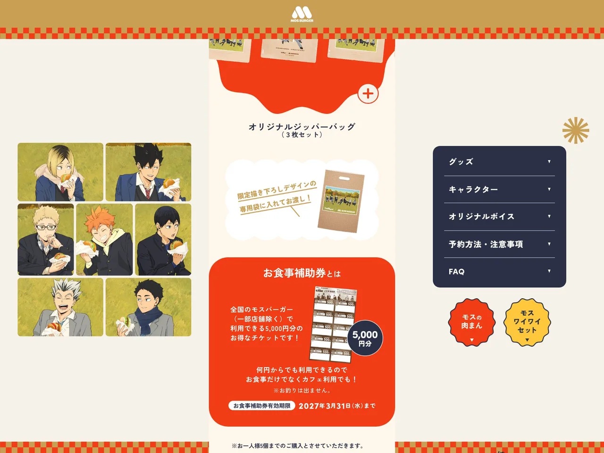

モスバーガー福袋2027のネット特別予約は、2026年11月25日15時に始まります。11月22日時点では受付開始前です。価格は5,000円（税込）です。アニメ「ハイキュー!!」とのコラボグッズ4点に、お食事補助券5,000円分が付きます。

01ネット予約は11月25日15時から12月24日26時まで
| 項目 | 公式の案内 |
|---|---|
| 開始 | 2026年11月25日15時 |
| 締切 | 2026年12月24日26時（25日午前2時） |
| 上限 | 1人5個まで。店舗ごとに上限数に達し次第、受付終了 |
| 予約窓口 | 公式のネット特別予約注文。一部店舗は対象外 |
| 店頭受取 | 2026年12月30日〜2027年1月11日 |
事前予約はネットのみです。 公式特設ページでは、11月25日15時を過ぎると特別予約注文サイトへのボタンが表示されると案内しています。店頭での事前予約は受け付けません。
02支払いと店頭受取の手順
- 特別予約注文サイトを開き、受取店舗と注文内容を確認します。公式の在庫検索ページで取扱店舗を確認できます。
- ネット決済で手続きします。モスカード、PayPay、d払い、クレジットカード、iPhoneのApple Pay、dポイントに対応します。現金での予約はできません。モスWEB会員への登録なしでも利用できます。
- 注文受付完了メールが届いたか確認します。在庫が表示されていた場合でも、注文手続き中に上限に達する場合があります。
- 受取期間内に予約した店舗へ行きます。年末年始は休業や短縮営業の場合があるので、事前に公式店舗検索で営業状況を確認してください。
注意受取期間を過ぎると受け取れません。受取店舗の振替や、予約完了後の数量・店舗の直接変更はできません。
注文内容を変更したい場合は、予約受付期間内に完了メールのURLからキャンセルし、希望の内容で改めて予約する手順です。別の予約を取り直す場合は、キャンセルの前に在庫状況を確認してください。 予約受付期間を過ぎてからのキャンセルや購入者都合の返品はできません。
03ハイキュー!!のグッズとお食事補助券
グッズはスクエアキルティングポーチ、マルチボウル、木製スプーン、オリジナルジッパーバッグです。ジッパーバッグは烏野高校・音駒高校・梟谷学園高校のデザインを各1枚収めた3枚セットです。グッズと補助券は描き下ろしデザインの専用袋に入ります。

補助券の有効期間は2026年12月30日から2027年3月31日までです。 1枚につき会計から500円を引く券が10枚入り、同じ会計で複数枚を使えます。利用金額が500円未満でもおつりは出ません。利用できるのは一部特殊店舗を除くモスバーガー店舗です。ネット注文、宅配、フルセルフレジ、お席で注文では使えません。
04よくある質問
ネット予約は何時までですか？
締切は12月24日26時（25日午前2時）です。店舗ごとの上限に達した場合は、その時点で受付を終了します。
予約は会員登録が必要ですか？
モスWEB会員に登録していなくても特別予約を利用できます。予約の成立は注文受付完了メールで確認できます。
予約なしで店頭販売はありますか？
公式は店舗によって12月30日以降に店頭販売を行う場合があると案内しています。店舗ごとの販売は公式案内に従って直接店舗で確認してください。
お食事補助券は受け取った日に使えますか？
受取期間の初日から有効です。利用対象の店舗で、注文時に補助券を使うことを伝えます。
05まとめ
結論予約は11月25日15時から公式のネット特別予約で受け付けます。購入後は12月30日から2027年1月11日までに予約店舗で受け取ります。
- 税込5,000円でハイキュー!!のグッズ4点とお食事補助券500円券10枚が入ります。
- 予約が済んだら完了メールを確認し、受取店舗の営業状況を調べてから来店します。
- キャラクターとコラボした福袋はサンリオ福袋2027の案内も参照できます。